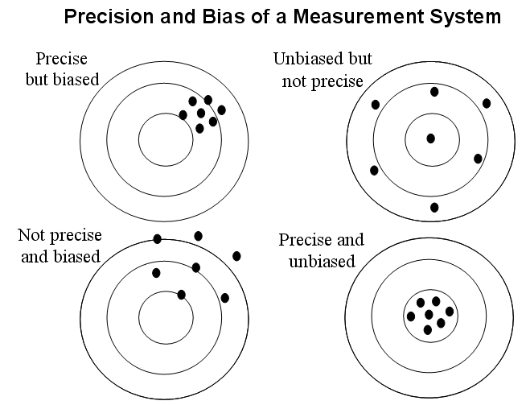

Chapter 6 Clinical research, why and how
(Sara Balduzzi, Antonios Daletzakis and Vincent van der Noort)
Time to take a step back. What are we doing here all day, as researchers? What is our goal and why is everything so complicated?
Of course there are many answers to these questions but one important aspect is this:
Clinical research tries to answer a question about a large group of patients (e. g. all stage III non-small cell lung cancer patients) by looking at a small subset of these patients (the patients in the trial).

You collect a number of study participants, see (for instance) how well they react to a new drug and then draw conclusions about how all other patients with the same disease will react to this drug in the future.
The first thing that comes to mind when seeing this is: this is impossible. You cannot know everything about all the people that are not in the trial. This is correct, on a fundamental level what we want is impossible and it is important to realize that statistics cannot change that: statistics is not magic.
However, more important is to not give up. As researchers we take (what I think is) the best course of action when confronted with an impossible situation: make the best of it. In our case: try to do what we can to make the conclusions about the large group of people (the general population) based on the small set of people (the study population) as reliable as possible. This what statistics, but also (part of) the rules and regulations from GCP are all about. While it is true that we cannot know everything, it is also true that after doing a study we know more than we knew before.
6.0.1 Bias and Precision
Much of the measures we take to draw more reliable conclusions fall in three categories:
- Increase accuracy
- Decrease bias
- Make sure your trial measures the things you are actually interested in in clinical practice
What do these terms mean and what can we do about it?
The precision of a quantitative measurement relates to the amount of random variation about a fixed point (be it the true value or not).
Bias may be defined as any factor or process that tends to produce results or conclusions that differ systematically from the truth. Any research study in a medical field is open to bias (from many sources).
In general, an accurate measurement is defined as both unbiased and precise.

Group discussion: the following picture gives some rather abstract examples of things that can affect the accuracy of our measurements, let’s see if we can give concrete examples on all of them:
6.0.2 Increase accuracy
Some general strategies for increasing accuracy are:
- Increase the sample size
- Use more accurate or sensitive techniques for your measurements
- Take prognostic factors into account
We will discuss all three of them shortly.
Sample size There is an obvious intuitive reason why increasing the sample size is good: we are trying to learn something about a large group of patients. The larger the fraction of those patients we actually see in our study, the more we learn about them.
But there is also a more mathematical reason, sometime called the law of large numbers. Suppose we are will to accept that (for now) we cannot learn enough about our patients to predict for each future patient their exact time of death or even whether or not their tumor will respond to drug X. However we do believe that by doing the study we can get some useful ‘summary’ level information about the patient group as a whole: what is their median overall survival? What fraction of patients will respond to drug X?
The median survival in the study patients is a an estimate of this ‘true’ median survival in all patient; the observed response rate in the study patients is an estimate of the ‘true’ response rate in all patients - this latter number can be interpreted as the probability for in individual future patient to respond.
Now this estimate will likely not be 100% accurate (i.e. equal to the true value) because of inter-subject variation and the fact that not every patient in past, present and future participates in the trial. But here we know that the more patients we include the more accurate the estimate becomes, and we can also calculate how fast. This is no longer a matter of biology but of mathematics: we can just model the trial patients as marbles we randomly draw from the urn of all patients.
(Note that here it is important the study patients are indeed a representative sample of the population of interest!)
We have an exercise about this further down. First let’s look at the other two bullets.
Sensitive measurements Our hospital is named after Antoni van Leeuwenhoek who contributed tremendously to our understanding of biology by improving the sensitivity of an (existing) measurement apparatus: the microscope. Just to say that there really is fame and glamour in this boring sounding bullet point.
In the context of clinical trials this is more about using standardized questionnaires for patient reported outcomes, standardized measurements of tumor (e.g. Recist), finding ways to be even better than that, like the automatic volume measurements that are currently developed here in the AvL, using overall survival instead of progression free survival as a measure of survival etc.
Prognostic factors Imagine that you are trying to estimate the difference in survival between two groups of patients (e.g. smokers and non-smokers) but among your trial patients you see that the groups do not only differ only in smoking status but also in other known prognostic factors such as age, socioeconomic status, percentage females etc. Then in order to get a more accurate of what part of the difference is attributable to smoking we can make a regression model taking these other factors into account. You already had a whole chapter on regression models, so this is just a short reminder why we care.
6.0.3 Reducing bias: randomized trials
The last example with smokers and non-smokers that differ in various aspects also ties in with the question of how to reduce bias. We can make a very long list (e.g. Chavalarias J Clin Epidemiology 63 (2010) identify 235 types of bias that have accquired their own name throughout the literature) but here I want to list just a few thing common in clinical trials:
- Identify sources of bias
- Use a control group
- Randomisation
- Blinding
The first point is obvious: think about everything that can go wrong before starting your trial.
Control groups: If you give a number of study patients drug X and after 1 year all of them are still alive, this looks like as if drug X is working very well, especially if you are someone who already believed that. But how do we know that these patients wouldn’t have lived for one year anyway?
One solution out of this is to include a second group of patients that do not get drug X but the standard of care and see if people in the ‘drug X’-group do actually live longer (or more often make the 1 year mark).
Randomization: Can we improve on the idea of the previous paragraph? We saw in the smoker/non-smoker example that it is annoying if the groups you want to compare differ in more aspects than the one you are interested in. Ideally we want the groups to be as comparable as possible with the exception of the one thing we are studying (normally: which treatment do the patients get, but sometimes also a potential risk factor like smoking).
One way to achieve that is through randomization. All patients that are eligible and willing to participate are randomly assigned to treatment A or treatment B. The groups will not be exactly equal, but due to the law of large numbers again we assume that when including enough patients all known and unknown prognostic factors must be balanced between arms.
When it comes to known factors we can also manipulate the randomness a bit (see chapter stratification later today) to ensure these are balanced.
Randomized controlled trials are considered the gold standard in clinical research
Question: What are some reasons to trust ‘randomness’ more than people when assigning patients to treatment arms?
Question: If randomized trials are so great, then why (i.e. for what reasons) do we do so many one-armed trials?
Blinding: Sometimes patients and/or treating physicians are blinded to (e.g. do not know) which treatment a patient receives with the goal of eliminating the placebo effect (or making it equally bad between arms). Also (even in one-armed trials) treating physicians are blinded to the emerging outcomes in order to prevent influencing their decisions on which patients to include or not into the trial.
In many practical situations blinding is not possible. (E.g. a trial that compares surgery to chemotherapy.) The amount of effort spend on blinding also depends on the outcome (e.g. when the outcome is overall survival we worry less about the placebo effect than when the outcome is (reduction of) pain).
6.0.5 Short summary of what we found in the exercise
We see:
- On one hand: what we want (to figure something out about all patients based on some patients) is fundamentally impossible. The probability of getting a wrong answer is greater than the probability of getting the right answer
- On the other hand: The situation is not hopeless. By including a not-too-tiny amount of patients we can make the probability of finding a wrong answer that is clinically relevantly different from the true answer pretty small.
Of course you have talked about this before already in the chapter about power and sample size.